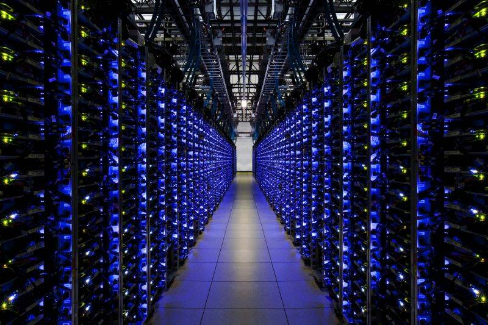
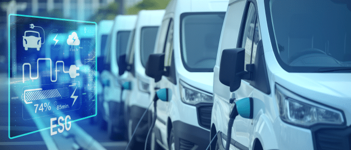
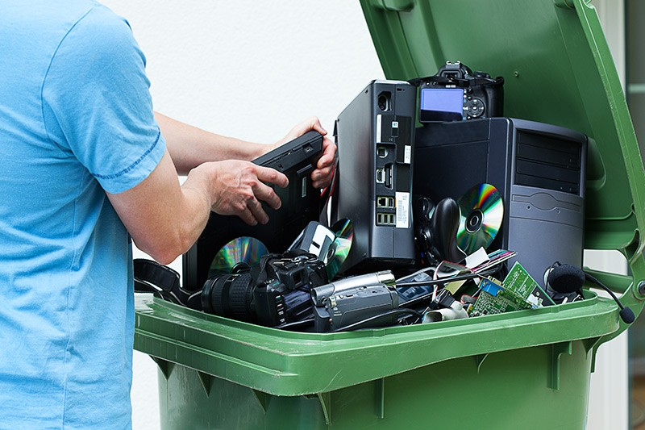
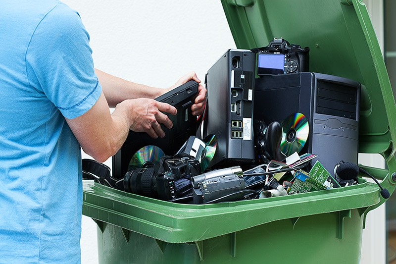

🌱 Alinhamento com o ODS 12 – Consumo e Produção Responsáveis
O ODS 12 tem como objetivo garantir padrões de consumo e produção sustentáveis, reduzindo impactos ambientais e promovendo o uso responsável de recursos. O projeto TI-Verde se conecta diretamente a essas metas ao implementar práticas de tecnologia sustentável em empresas e na vida cotidiana.
Como TI-Verde contribui para o ODS 12:
- Redução do consumo de energia e otimização de recursos tecnológicos.
- Minimização do descarte de equipamentos eletrônicos, incentivando a reciclagem de e-lixo.
- Conscientização social sobre consumo sustentável de tecnologia.
- Promoção de educação ambiental e inclusão digital em comunidades.
Exemplos de Empresas e Iniciativas Alinhadas ao ODS 12
| Empresa | Iniciativa | Impacto Ambiental | Benefício Social | Imagem Sugerida |
|---|---|---|---|---|
| Natura | Data centers com refrigeração natural e servidores virtualizados | Redução de 35% nas emissões de CO₂ | Cursos de capacitação em TI Verde para jovens de comunidades |  |
| Banco do Brasil | Migração para nuvem sustentável e substituição de equipamentos antigos | Economia de 40% de energia e 20 toneladas de e-lixo evitadas | Projetos de inclusão digital e conscientização tecnológica | |
| Ambev | Sensores de monitoramento energético e sistemas inteligentes de refrigeração | Redução de 25% no consumo energético e 18% menos CO₂ | Campanhas de conscientização e transporte corporativo sustentável |  |
Como aplicar no dia a dia:
- Desligar equipamentos eletrônicos quando não estão em uso.
- Reciclar celulares, baterias e cabos corretamente.
- Escolher dispositivos com selo Procel ou eficiência energética.
- Usar nuvem sustentável para armazenar documentos e otimizar servidores.
Essas ações mostram que empresas e indivíduos podem contribuir para o consumo e produção responsáveis, reduzindo impactos ambientais e promovendo benefícios sociais, alinhados às metas globais do ODS 12.
 
